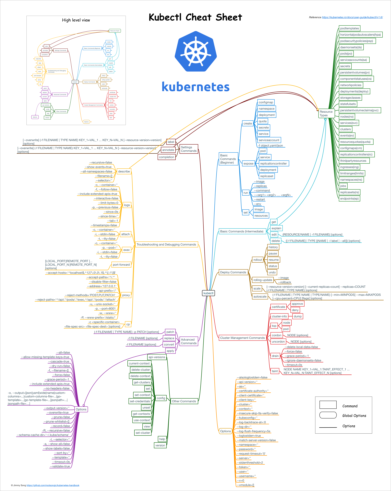
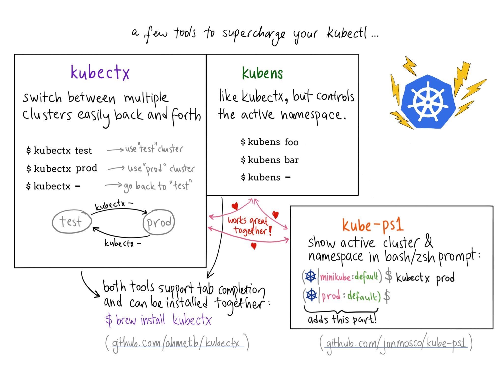

Kubectl命令
Table of Contents
Kubernetes提供的kubectl命令是与集群交互最直接的方式，kubectl命令参考图如下：

Kubectl的子命令主要分为8个类别：
- 基础命令（初学者都会使用的）
- 基础命令（中级）
- 部署命令
- 集群管理命令
- 故障排查和调试命令
- 高级命令
- 设置命令
- 其他命令
熟悉这些命令有助于操作和管理kubernetes集群
配置
命令行提示

- kubectx：用于切换kubernetes context
- kube-ps1：为命令行终端增加$PROMPT字段
kube-shell：交互式带命令提示的kubectl终端
全部配置完成后的kubectl终端如下图所示：

kube-shell
开源项目kube-shell可以为kubectl提供自动的命令提示和补全，使用起来特别方便
Kube-shell有以下特性：
- 命令提示，给出命令的使用说明
- 自动补全，列出可选命令并可以通过tab键自动补全，支持模糊搜索
- 高亮
- 使用tab键可以列出可选的对象
vim模式
安装：
pip install kube-shell --user -U
身份认证
Kubernetes中存在三种安全认证方式：
- CA证书：API server与其它几个组件之间都是通过这种方式认证的
- HTTP base：在API server的启动参数中指定的–token-auth-file=/etc/kubernetes/token.csv文件中明文的用户、组、密码和UID配置
- bearer token：HTTP请求中header中传递的Autorization:Bearer token，这个token通常保存在创建角色跟serviceaccount绑定的时候生成的secret中
kubectl通过读取 kubeconfig 文件中的配置信息在向API server发送请求的时候同时传递认证信息，同时支持CA证书和bearer token的认证方式
命令自动补全
建议使用oh-my-zsh，增加对kubectl命令自动补全支持
修改~/.zshrc文件，增加如下两行：
plugins=(kubectl) source <(kubectl completion zsh)
保存后重启终端即可生效